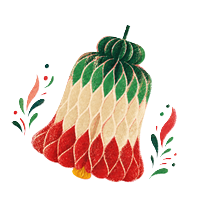
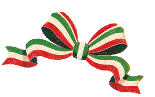
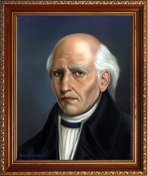
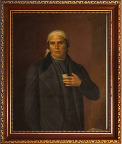
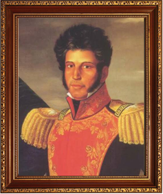
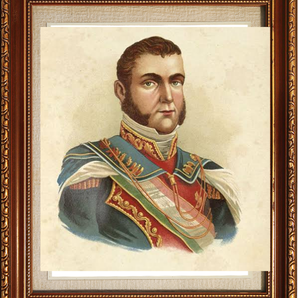
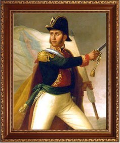
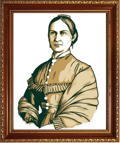
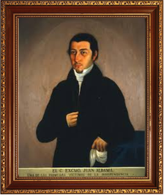
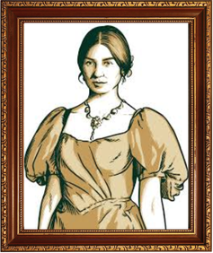

Miguel Hidalgo y Costilla fue un sacerdote y uno de los principales líderes de la Independencia de México. El 16 de septiembre de 1810 dio el famoso Grito de Dolores, con el que inició la lucha contra el gobierno español. Hidalgo reunió a miles de personas y logró tomar ciudades importantes como Guanajuato y Valladolid. También estuvo en contra de la esclavitud y buscó mejorar las condiciones de las personas. Fue capturado y ejecutado en 1811, pero su lucha continuó y finalmente México logró su independencia en 1821.

José María Morelos y Pavón fue un sacerdote y líder insurgente que continuó la lucha por la Independencia después de la muerte de Miguel Hidalgo. Organizó un ejército y logró importantes victorias contra las fuerzas españolas. En 1813 presentó el documento llamado “Sentimientos de la Nación”, donde expresó sus ideas sobre la libertad y un México independiente. Fue capturado y ejecutado en 1815, pero sus ideas fueron importantes para continuar el movimiento independentista.

Vicente Guerrero fue uno de los principales líderes insurgentes durante la Independencia de México. Continuó luchando contra las fuerzas españolas cuando otros líderes ya habían sido derrotados. Guerrero mantuvo el movimiento con su ejército durante varios años. En 1821 se unió con Agustín de Iturbide mediante el Abrazo de Acatempan y juntos apoyaron el Plan de Iguala. Gracias a esta unión, se logró la consumación de la Independencia de México en 1821.

Agustín de Iturbide fue un militar que tuvo un papel importante en la etapa final de la Independencia de México. En 1821 se unió con Vicente Guerrero y creó el Plan de Iguala, que proponía la independencia, la religión católica y la unión entre los diferentes grupos de la sociedad. Después formó el Ejército Trigarante, que entró a la Ciudad de México en septiembre de 1821, logrando la consumación de la Independencia.

Ignacio Allende fue un militar y uno de los principales participantes en la conspiración que buscaba iniciar la Independencia de México. Se unió a Miguel Hidalgo y otros líderes para comenzar el movimiento en 1810. Participó en varias batallas y ayudó a organizar al ejército insurgente. Después de algunos desacuerdos con Hidalgo, continuó luchando por la causa. Fue capturado y ejecutado en 1811.

Josefa Ortiz de Domínguez fue una de las mujeres más importantes de la Independencia de México. Participó en las reuniones secretas de los conspiradores de Querétaro y ayudó a organizar el movimiento. Cuando descubrió que la conspiración había sido descubierta, logró avisar a los demás para que comenzaran el levantamiento. Gracias a su aviso, Miguel Hidalgo pudo iniciar el movimiento el 16 de septiembre de 1810.

Juan Aldama fue un militar que participó en la conspiración de Querétaro y apoyó los planes para iniciar la Independencia. Se unió a Miguel Hidalgo e Ignacio Allende cuando comenzó el levantamiento en 1810. Participó en varias batallas durante los primeros meses de la lucha. Finalmente fue capturado junto con otros líderes insurgentes y ejecutado en 1811.

Leona Vicario fue una de las mujeres que más apoyó el movimiento de Independencia. Ayudaba a los insurgentes proporcionando dinero, información y recursos. También colaboraba con personas que luchaban contra el gobierno español y utilizaba sus propios recursos para apoyar la causa. Fue descubierta y perseguida por las autoridades, pero continuó apoyando la Independencia. Es considerada una de las heroínas más importantes de México.